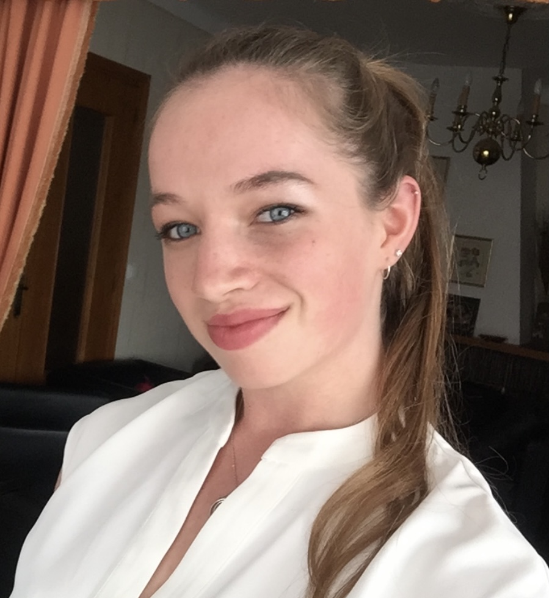
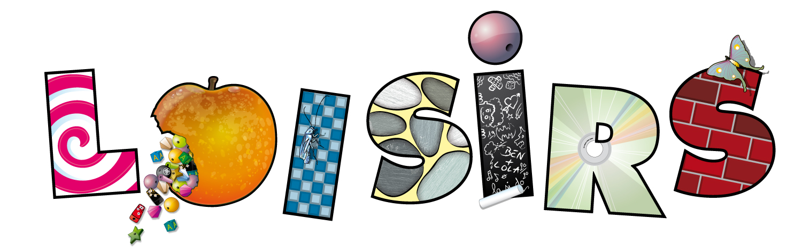

Hello, moi c'est Sterenn 😎

J'ai 20 ans et je suis actuellement en 3ème année de Bachelor en Marketing à Audencia Nantes. Je suis en apprentissage à l'Européenne de Chalets, une petite entreprise qui vend des chalets en kit située à Locmariaquer.
Découvrez-moi !
J'aime :
Développer la communication d'une entreprise
Créer du contenu destiné aux réseaux sociaux
Sortir avec mes amies
M'occuper de mes animaux
Mon parcours 🏫
J'ai commencé par passer mon Bac ES que j'ai obtenu en 2019. A la suite de ça, je me suis orientée vers un DUT Techniques de Commercialisation à Quimper. J'ai réalisé mes 2 années de DUT en alternance chez EDF au service commerciale.
Aujourd'hui, j'ai intégré une 3ème année de Bachelor en marketing à Audencia Nantes que je réalise aussi en alternance dans une entreprise plus petite : l'européenne de chalets situé à Locmariaquer (56).

Mes expériences professionnelles 👩💼
Aout 2021 - Aujourd'hui : Chargé de communication en alternance à l'Européenne de chalets
Aout 2019 - Aout 2021 : Conseillère commerciale en apprentissage chez EDF
Juillet 2019 - Aout 2019 : Job d'été - Plongeuse à l'Auberge de l'Ile
Juin 2016 : Conseillère clientèle stagiaire en animalerie au Truffaut
Février 2015 : Stage vétérinaire à la Clinique des 7 chappelles
Mes compétences 👍
- Organisation
- Autonomie
- Impliquée
- Dynamisme
- Ecoute
Mes Loisirs 🐴
Je pratique l'équitation depuis mon plus jeune âge. Je suis propriétaire de 3 chevaux dont 2 que je sors en compétition de saut d'obstacle. J'ai mon galop 7 et je m'occupe actuellement d'une jument d'éleveur pour effectuer le débourrage et les premières ann&ées de travail. J'aime également la nature et les sorties en mer.
